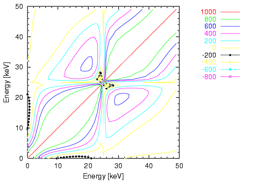

set term table
set xrange [0. : 50 ]
set yrange [0. : 50 ]
set zrange [-500 : 1000 ]
set xtics 10
set ytics 10
set mxtics 2
set mytics 2
set nosurface
set cont
set view 0,0
set ticslevel 0
set cntrparam levels auto 10
set output "covar.tbl"
splot "covar.dat" u ($1/10):($2/10):3 notitle w line
set term postscript eps enhanced color solid
set size sq 0.7,0.7
set zero 1e-20
set key screen 0.60, screen 0.65
set pointsize 0.6
set tmargin 1
set mxtics 5
set mytics 5
set xtics 10
set ytics 10
set xrange [ 0 : 50 ]
set yrange [ 0 : 50 ]
set xlabel "Energy [keV]"
set ylabel "Energy [keV]"
set linestyle 1 lt 1 lw 1
set linestyle 2 lt 2 lw 1
set linestyle 3 lt 3 lw 1
set linestyle 4 lt 4 lw 1 pt 4
set linestyle 5 lt 5 lw 1 pt 5
set linestyle 6 lt 6 lw 1 pt 6
set linestyle 7 lt 7 lw 1 pt 7
set output "covar.eps"
plot "covar.tbl" i 0:0 u 1:2 ti "1000" w l ls 1, \
"covar.tbl" i 1:1 u 1:2 ti "800" w l ls 2, \
"covar.tbl" i 2:2 u 1:2 ti "600" w l ls 3, \
"covar.tbl" i 3:3 u 1:2 ti "400" w l ls 4, \
"covar.tbl" i 4:4 u 1:2 ti "200" w l ls 5, \
"covar.tbl" i 5:5 u 1:2 ti "0" w l ls 6, \
"covar.tbl" i 6:6 u 1:2 ti "-200" w lp ls 7, \
"covar.tbl" i 7:7 u 1:2 ti "-400" w lp ls 6, \
"covar.tbl" i 8:8 u 1:2 ti "-600" w lp ls 5, \
"covar.tbl" i 9:9 u 1:2 ti "-800" w lp ls 4
pause -1
